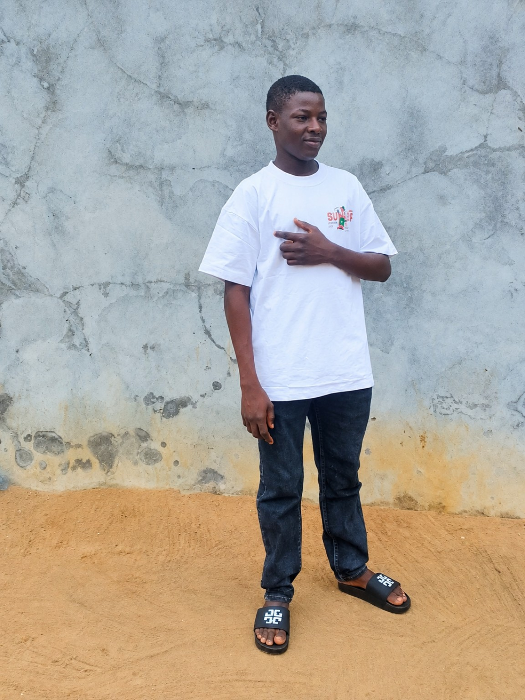

01
Admission Consultation
Personal guidance for prospective students trying to understand their admission options and next steps.
ADMISSION GUIDANCE • STUDENT SUPPORT
I’m Dosu Emmanuel Pesu, a LASU student and educational consultant helping prospective students understand applications, admission processes, screening, clearance and related student-support steps.

ABOUT ME
My name is Dosu Emmanuel Pesu. I am a university student at Lagos State University (LASU), consultant and student-support service provider. Through DOSU EDUCATIONAL CONSULT, I help prospective students navigate admission processes with practical guidance and clear communication.
My focus is not to promise admission. Instead, I help students understand the steps involved, avoid preventable mistakes, and properly handle the parts of their application or school process that I am able to assist with.
WHAT I CAN HELP WITH
Personal guidance for prospective students trying to understand their admission options and next steps.
Support with understanding application requirements and completing relevant processing steps.
Step-by-step guidance around screening and clearance requirements and what to prepare.
Help understanding O'Level/JAMB-related requirements and how they affect the admission process.
Practical support for navigating relevant admission portals and understanding application steps.
MY EXPERIENCE
These figures reflect my current experience and will be updated as I continue to assist more students. No result is presented as a guarantee of admission.
FAQ
No. Admission decisions are made by the relevant institution. I provide guidance and assistance with processes I can legitimately help with.
Send a message on WhatsApp using the button below. Tell me the school, course and stage of your application, and I will advise you on the next step.
Yes. You can first explain what you need help with so I can tell you what assistance is appropriate.
You can follow DOSU CONSULT on TikTok for admission-related information and updates.
LET'S TALK
Send your inquiry directly on WhatsApp and let's discuss what you need.